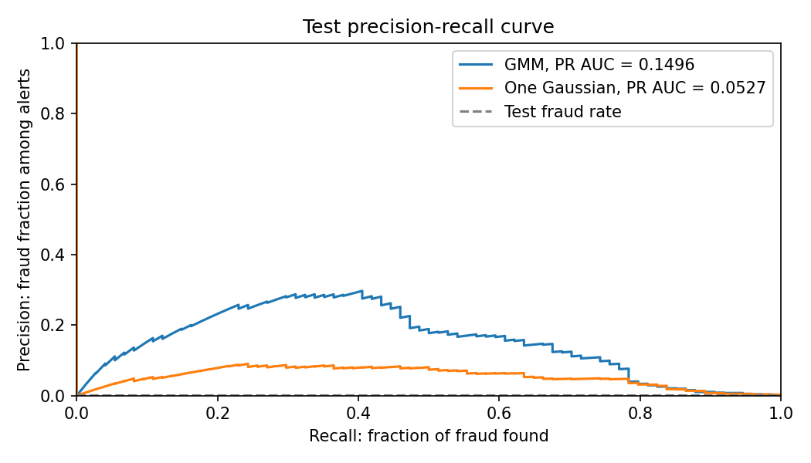
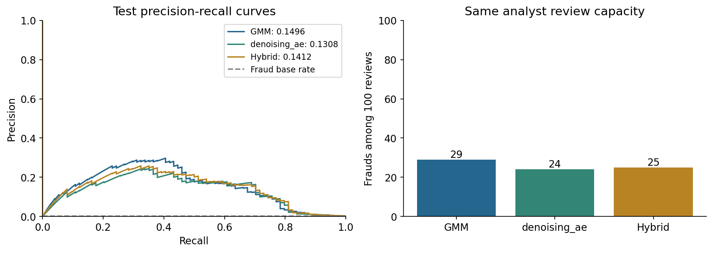

Card Fraud Triage
Team T011 · Section A · Project 26
Study the project in two parts: Gaussian mixture density scoring in Phase 1, then autoencoder reconstruction and the hybrid comparison in Phase 2. Read the saved notebooks and results without running Python.
Phase 1 · Machine learning
Learn normal transaction density with a Gaussian Mixture Model. Read notebook 01, then run 02–05 in order.
Notebooks
- 01Project and literatureCode
The review problem, sources and experiment plan.
- 02Data quality and EDACode
Check the CSV, remove exact repeats and split by time.
- 03Features and scalingCode
Build the same 29 inputs from legitimate training rows.
- 04GMM trainingCode
Understand EM and choose components using AIC and BIC.
- 05Evaluation and thresholdsCode
Read PR curves, false alerts and review-capacity results.
Phase 1 results
| Model | PR area | Frauds / 100 reviews | Frauds at default | False alerts at default |
|---|---|---|---|---|
| GMM, K = 8 | 0.1496 | 29 | 37 / 74 | 172 |
The one-Gaussian reference has PR area 0.0527. The default cutoff uses a 0.5% validation false-positive budget. Saved metric summary.

Phase 2 · Deep learning and hybrid
The autoencoder is the deep learning model: it learns to compress and rebuild legitimate transactions. Start with deep learning in 10 minutes, then read 00 and run 01–04. GMM is the ML comparison; score fusion is the hybrid extension.
Notebooks
- 00Start hereCode
The DL question, fair-comparison rules and retained team roles.
- 01Data and splitCode
Verify the shared dataset and the chronological periods.
- 02Features and scalingCode
Give GMM and AE the same legitimate training inputs.
- 03Autoencoder trainingCode
Learn compression, clean targets, noise and the training loop.
- 04Hybrid and evaluationCode
Compare scores, thresholds, review workload and ablations.
Phase 2 results
| Model | PR area | Frauds / 100 reviews | Frauds at default | False alerts at default |
|---|---|---|---|---|
| GMM | 0.1496 | 29 | 37 | 172 |
| Denoising AE | 0.1308 | 24 | 33 | 137 |
| Hybrid | 0.1412 | 25 | 35 | 132 |
GMM ranks best here. At the default validation policy, hybrid makes 40 fewer false alerts than GMM while catching two fewer frauds. The test benchmark was already used in Phase 1. Saved metric summary.

The same team and roles
| Member | Enrollment | Responsibility |
|---|---|---|
| H Maheshwari (Hardik) | 2401010174 | Evaluation and thresholds |
| Vaibhav | 2401010486 | Features and scaling |
| Mayank | 2401010267 | Model training; README and slides with Keshav |
| Keshav | 2401010222 | Data quality and EDA; README and slides with Mayank |
| Mitul Bhatia | 2401010279 | Overall project lead and coordination |
All five jointly contribute to the report and should understand the complete pipeline. Review the contribution record.